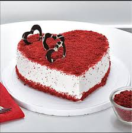

Angel Food Cake

Angel food cake, or angel cake,
is a type of sponge cake made
with egg whites, flour, and sugar..
It gained its unique reputation
along with its name due to its light
and fluffy texture.
Red Velvet Cake

This is a true favorite, especially in the south.Made with either butter
or oil, red velvet cake's Modern versions often achieve this hue by
using red food coloring, or in the case of the raspberry
velvet cake, shown here, pink.
Black Forest
The cake is named not directly after the Black Forest
(Schwarzwald) mountain range in southwestern Germany
but rather from the specialty liquor of that region, known as
Schwarzwälder Kirsch(wasser) and distilled from tart cherries.